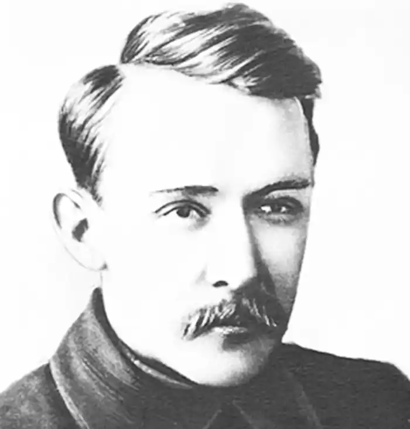

Василь Еллан-Блакитний (1894-1925)
Василь Михайлович Елланський народився 12 січня 1894 року у родині священика в селі Козлі (тепер — Михайло-Коцюбинське) на Чернігівщині. Михайло Елланський — батько письменника — рано помер і залишив трьох синів і дочку на утриманні матері. Почалося тяжке, нужденне життя, в якому єдиним джерелом існування була материна пенсія. Дітей треба було вчити, тому за два роки до початку революції 1905 року сім'я Елланських переїхала до Чернігова. Спершу жили в дешевій найманій квартирі в Холоднім Яру, на околиці міста.
1906 року з допомогою родичів матері вдалося купити невеличкий будинок, що містився в глухому завулкові на вулиці Селюка, № 24-а. Тут і прожив Василь аж до від'їзду в Київ, тобто до осені 1914 року. Та й після того частенько навідувався він сюди, а 1917 року майже цілий рік разом з родиною мешкав у Чернігові. Ще за життя, батько Василя категорично запевняв, що не пустить дітей попівською стежкою. Тієї ж думки була й мати, але матеріальні умови були такі злиденні, що вона мусила віддати дітей до духовної школи, де їм було гарантоване безкоштовне навчання. Старший брат Василя, що жив у Чернігові при бурсі, захворів і помер. Тому, оселившись у Чернігові, мати тримала Василя при собі. Вчитись Василь почав рано, але до духовної семінарії вступив лише в десять років, бо мати, пригнічена смертю старшого сина, тремтіла над слабим на здоров'я Василем. У школі він вчився погано і двічі залишався в одному класі. Перешкоджало навчанню погане здоров'я, а ще більше — читання книжок. Навіть обідаючи, він мав коло себе книжку. З 1910 року письменник навчається у Чернігівській духовній семінарії, яку щиро не любить. Відвідує знамениті "суботи" у вітальні М.Коцюбинського, де його перші вірші сприйняті з доброзичливою увагою майстра. По закінченні четвертого класу (1914) вступає на економічне відділення Київського комерційного інституту, де вже навчався його давній, ще з бурси, приятель — П.Тичина. Соціально-економічні дисципліни, що викладалися тут, були до душі молодому В.Елланському. Проте інститут він теж не закінчив: "сурмами світовими 17-й рік заграв" (В.Сосюра) і недавній студент з головою пірнув у революційну роботу: революційні гуртки, товариства "Просвіти", участь в організації повітового селянського з'їзду на початку літа 1917 року... Все це закономірно приводить В.Елланського до партії українських есерів. Він стає її активістом, а незабаром і головою її Чернігівського губернського комітету. За часів Центральної Ради Василь Михайлович потрапляє до Лук'янівської в'язниці за антиурядове звернення "До робітників і селян України". В неспокійні революційні роки В.Елланський бере участь у створенні підпільної друкарні в Одесі, керує повстанням проти гетьмана в Полтаві, під час наступу Денікіна, переховуючись у сторожці на Байковому цвинтарі, керує київським боротьбістським підпіллям. Після злиття українських комуністів-боротьбистів з КП(б)У веде неухильну боротьбу проти шовіністичних та націонал-нігілістичних тенденцій у партії й державі ("опозиційна" промова В.Блакитного на конференції КП(б)У в листопаді 1920 року), кидає всі свої сили й енергію на організацію культурного відродження в УРСР. Перший і незмінний редактор урядової газети "Вісті" та додатка до неї — "Література. Наука. Мистецтво" (пізніша назва — "Культура і побут"). Заснував і редагував журнали "Всесвіт", "Червоний перець". Певний час є головою колегії Державного видавництва України. Організатор і керівник першої спілки пролетарських письменників "Гарт", що мало філії у багатьох містах України і навіть у Канаді. До "Гарту" входили вже відомі на той час письменники — Павло Тичина, Микола Хвильовий, Володимир Сосюра, Майк Йогансен, Микола Куліш, Валеріан Поліщук та ін. Тяжка недугу серця, яку з раннього дитинства мав Еллан-Блакитний, спричинилася до його смерті на 32-му році життя. 4 грудня 1925 року Василь Михайлович помер. Згодом ім'я поета було приречене на довготривале забуття: його було проголошено "буржуазним націоналістом", "бандитом" і посмертно винесено вищу міру покарання. 1934 року було демонтовано пам'ятник В.Еллану-Блакитному, поставлений його друзями в Харкові. Твори письменника були заборонені, а всі його товариші по партії боротьбистів розстріляні чи заслані на сибірську каторгу. В.Еллан почав писати вірші з 1912 року. 1917 року поет пише вірш "Вперед" ("Ні слова про втому!"), що став у поезії Василя Еллана-Блакитного тією віхою, що позначила вступ автора у період творчої зрілості. Образний світ його поезії (основна частина його лірики написана 1917-1920 років) — це світ "яким бачить його революціонер, що визнав за закон свого життя боротьбу й саможертовність з усім її аскетизмом і "неувагою" до "простих" життєвих реалій тих самих "мільйонів", за які він бореться. Світ, чиї просторові координати простягаються "від тюремної камери оберегів" і київської вулиці — до Кремля, Будапешта, Парижа, цілої Європи і, зрештою, всієї планети! У світі поета "кожен день мобілізації й черги, з остюками хліба крайки", але в якому навіть це притишене визнання супроводжується застережливим окриком ліричного героя, точніше, його другого, непіддатного хитанням і паніці, "я": "Хто там співає тужливі пісні? Хто там співає?" ("На обважнім…") Такі основні мотиви його ліричної збірки "Удари молота і серця" (Київ, 1920 р., 24 стор.) Після 1921-1922 років ліричний голос В.Еллана поволі стихає. На ситуацію в країні і міжнародне життя він реагує переважно сатиричною поезією. Протягом 1924-1925 років він видає три книги віршованої газетної сатири: "Нотатки олівцем", "Радянська гірчиця", "Державний розум". В доробку письменника низка новелістичних етюдів та начерків ("Фабрична", "Лист без адреси", "Наші дні" та ін.) і значна за обсягом публіцистична проза політичної та загальнокультурної тематики, а також низка вагомих статей і виступів із питань літератури й мистецтва. Микола Зеров назвав Еллана автором "веселих і влучних пародій на українських поетів". Василь Елан — один з перших теоретиків і критиків української літератури, будівничий нової України та її національної культури. Він закликав зробити українську мову "мовою Жовтня", тобто впровадити її в усі сфери державного й суспільного життя. Як згадував Микола Бажан у книзі "Удари серця", — "вся суть його світлого, талановитого, бойового, революційного життя найповніше відбилась в його віршах, в глибоких і ясних озерцях, над якими задумливо схиляється майбутність". Твори: Твори у 2 т. (К., 1958); Поезії (К., 1967); Поезії (К., 1983). Література: Адельгейм Є. Василь Еллан (К., 1959).